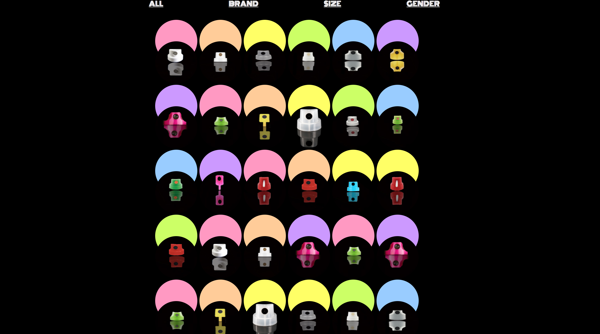
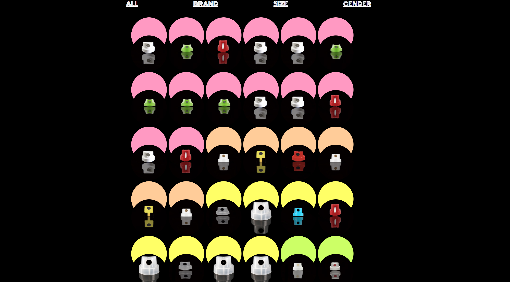
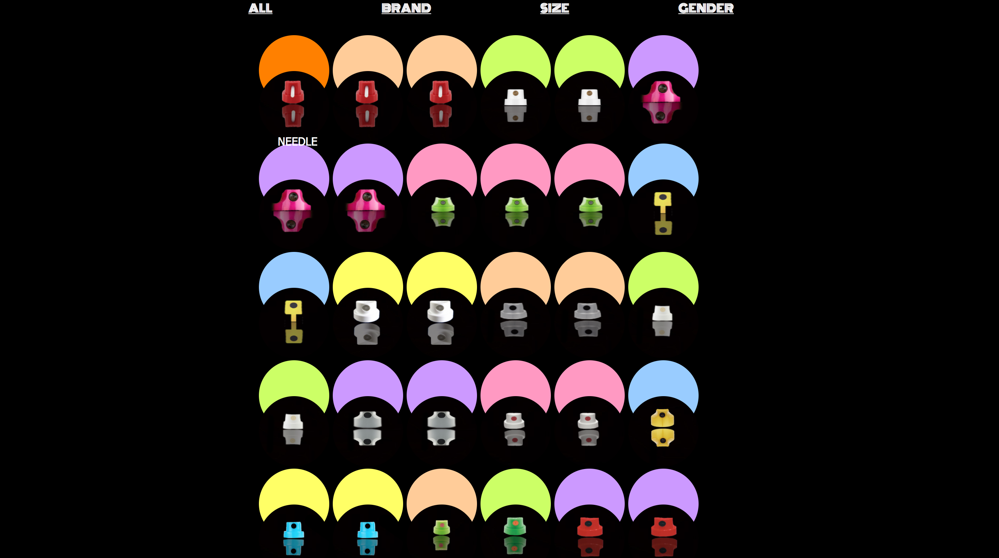
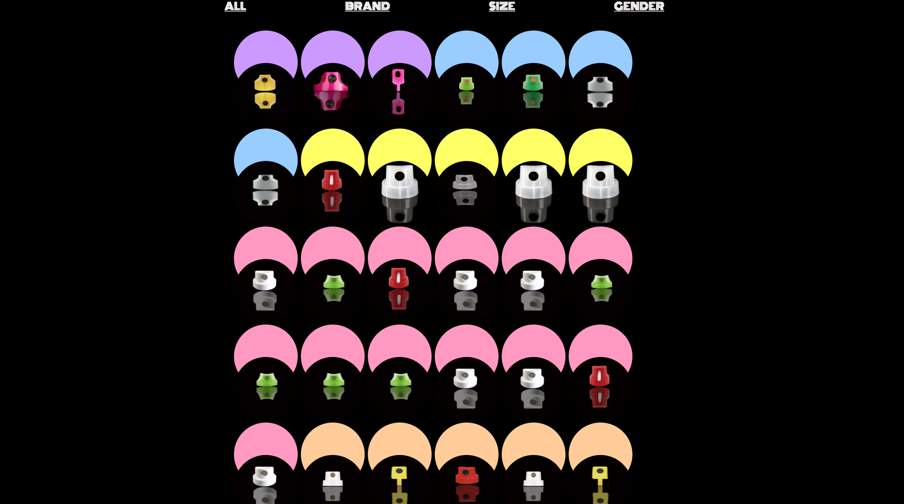

Varun Vig
Core Studio Interaction
Collection Project Documentation
Brief: Build an interactive archive for a collection that doesn’t exist in any form online.
Collection: My personal collection of Graffiti Caps/Nozzles
My piece is called "The Cap Kit". The idea behind this project was to create a personal collection of all the graffiti caps I own and paint with since I started writing. Nozzles or in the graff world known as caps are a writers paint brush essentially. Every cap is made for a purpose. It could be designed to produce very fat line or thing lines, it could be used for calligraphy or just outright bombing. The caps are very special to the writer as you can tell someones style by gauging their caps.
Regarding my design, I decided to go with something very organised and in a way slightly minimal from my usual aesthetic. Having catagorized the caps through four different but yet very essential categories was my aim. The categories being firstly all caps being in a random order as they would be in any kit. I further went on to include size, brand compatability and gender. To accompany these categories I also colour coded the back rings for each cap. When hovered on they change colour and the pallet was selected on the basis of the recent pieces that I had painted using those caps.
My design aims to find itself in a user friendly space where categorizing the object is easy and understandable but yet gives a clear description of the product, which I have done through hovering beneath the cap for the name.
My end goal for this project, I feel like I could pitch this system to already existing spray paint brands for finding a more unique, efficient and yet aesthetically pleasing way of categorizing. I would also like to compare this online kit with other artists kits to see how unique every individual gets with their caps, giving a deeper understanding in to the culture and hence the artist himself.